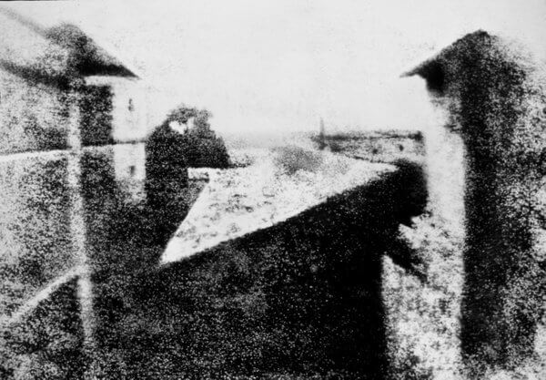
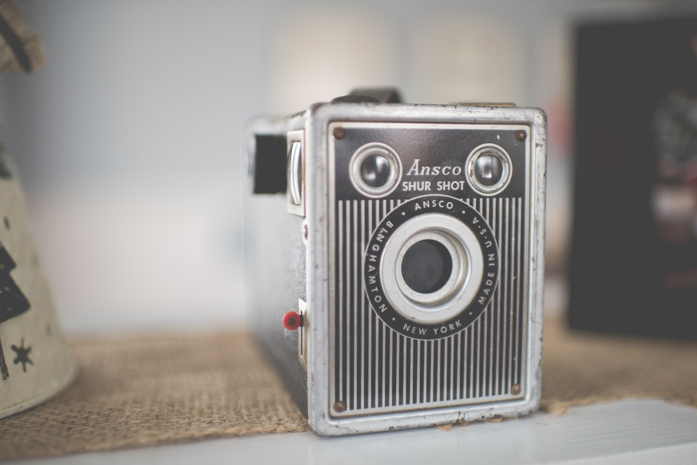
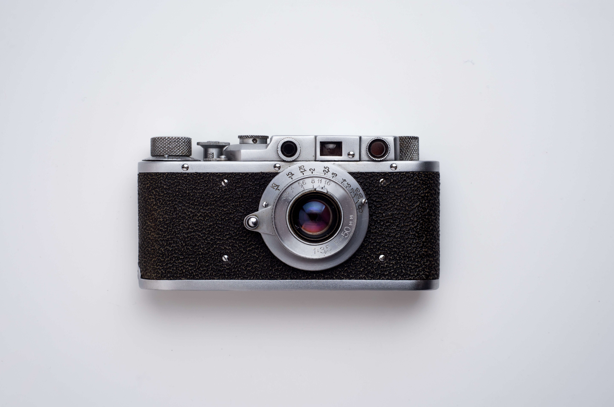

Hablemos un poco acerca de la revolución fotográfica
La primera cámara no se desarrollo hasta el siglo XIX, pero ya antes se había inventado otros aparatos que intentaban plasmar una imagen.
.jpg)
La cámara oscura, era una caja cerrada con un pequeño agujero por donde entraba la luz. la cual se proyectaba al interior de la caja: si se colocaba un material sensible a la luz en la pared interior se conseguía una especie de fotografía.
El inventor Joseph Nicphere Niepce, mejoro el prototipo instalando una placa de betún la cual se endurecía con el contacto con la luz. en 1826 logro crear una imagen fija del patio de su casa y así se crea la primera imagen denominada hialografía.
En paralelo, el científico británico Henry Fox Talbot experimentó con otros materiales. Apenas unos días después de la presentación del daguerrotipo anunció que había descubierto el papel sensible a la luz.
La principal ventaja de este sistema, llamado calotipo, es que el papel se convierte en un negativo de la imagen que puede utilizarse para hacer copias de la fotografía.
Hito que impulsaron la fotografía
La fotografía empezó a usarse para ilustrar acontecimientos a partir de la segunda mitad del siglo XIX, fue entonces cuando apareció la figura del reportero fotográfico de guerra. La cámara aun era un aparato muy grande y pesado .el fotógrafo necesitaba trasladarla a un pequeño laboratorio para revelar la imagen. Esto cambia con el lanzamiento de la primera cámara Kodak
El segundo gran cambio que contribuyó a la difusión de las cámaras fue la invención del carrete de película. Justo en 1925, el ingeniero alemán Oskar Barnak presentó la primera cámara Leica, más rápida y con carrete incorporado
 